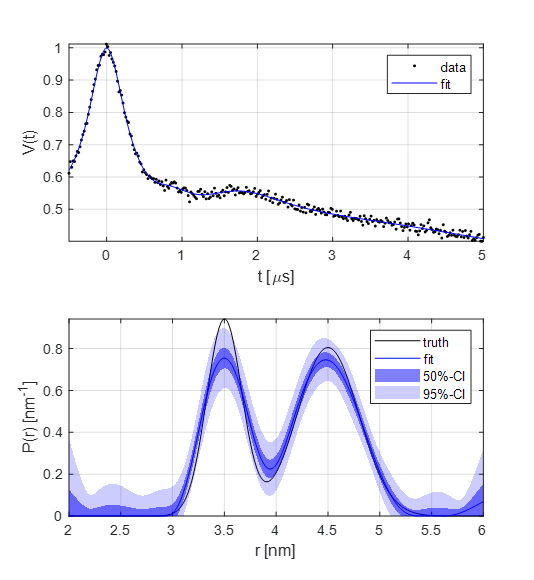

Fitting a custom kernel model with a parameter-free distribution¶
Script:
%============================================================================
% DeerLab Example:
% Fitting a custom kernel model with a parameter-free distribution
%============================================================================
% This short example will introduce the use of SNLLS to fit a dipolar
% kernel model and a parameter-free distribution to a dipolar signal
clc,clf,clear
% Generating a dataset
%-----------------------------------------------------------------------------
% For this example we will simulate a simple 4pDEER signal
t = linspace(-0.5,5,300);
r = linspace(2,6,200);
% Generate ground truth and input signal
P = dd_gauss2(r,[3.5 0.4 0.4 4.5 0.7 0.6]);
lam = 0.36;
c0 = 250; %uM
B = bg_hom3d(t,c0,lam);
V = dipolarsignal(t,r,P,lam,B,'noiselevel',0.01);
% Fitting via SNLLS
%-----------------------------------------------------------------------------
% Now in order to fit a non-linear dipolar kernel model (Kmodel) and a
% linear parameter-free distance distribution (Pfit) simultaneously, we
% can use the separable non-linear least squares (SNLLS) method.
% There are two different parameter sets being fitted at the same time:
% linear and non-linear parameters. Therefore, the lower/upper bounds for
% the two sets need (or can) be specified.
%--------------------------
% Non-linear parameters:
%--------------------------
% lam c0
%--------------------------
par0 = [0.5 50 ]; % Start values
lb = [ 0 0.05]; % lower bounds
ub = [ 1 1000]; % upper bounds
%--------------------------
% Linear parameters:
%--------------------------
% Pfit
%--------------------------
lbl = zeros(numel(r),1); % Non-negativity constraint of P
ubl = [];
% Run SNLLS optimization
[parfit,Pfit,puq] = snlls(V,@(p)Kmodel(p,t,r),par0,lb,ub,lbl,ubl);
% Get non-linear parameters uncertainty
param95 = puq.ci(95,'nonlin'); % 95%-confidence interval
% Get linear parameters (distribution) uncertainty
Pci50 = puq.ci(50,'lin'); % 50%-confidence interval
Pci95 = puq.ci(95,'lin'); % 95%-confidence interval
% Print result
fprintf('lambda = %.2f(%.2f-%.2f) \n',parfit(1),param95(1,1),param95(1,2))
fprintf('c0 = %.2f(%.2f-%.2f)uM \n',parfit(2),param95(2,1),param95(2,2))
% Get fitted model
Pfit = Pfit(:);
Kfit = Kmodel(parfit,t,r);
Vfit = Kfit*Pfit;
% Plots
%-----------------------------------------------------------------------------
subplot(211)
plot(t,V,'k.',t,Vfit,'b')
axis tight, grid on, box on
xlabel('t [\mus]')
ylabel('V(t)')
legend('data','fit')
subplot(212)
cla,hold on
plot(r,P,'k',r,Pfit,'b')
fill([r fliplr(r)],[Pci50(:,1); flipud(Pci50(:,2))],'b','FaceAlpha',0.5,'LineStyle','none')
fill([r fliplr(r)],[Pci95(:,1); flipud(Pci95(:,2))],'b','FaceAlpha',0.2,'LineStyle','none')
axis tight, grid on, box on
xlabel('r [nm]')
ylabel('P(r) [nm^{-1}]')
legend('truth','fit','50%-CI','95%-CI')
% Dipolar kernel model
%-----------------------------------------------------------------------------
% This function contains the model for the dipolar kernel we want to fit. It
% is a non-linear functon that accepts the parameter array (p) and returns the
% fitted dipolar kernel (K). The linear parameters, in this case P, are
% computed by solving argmin(norm(K*P-V)^2) automatically in the snlls() function.
function K = Kmodel(p,t,r)
% Unpack parameters
lam = p(1);
c0 = p(2);
% Get background
B = bg_hom3d(t,c0,lam);
% Generate 4pDEER kernel
K = dipolarkernel(t,r,lam,B);
end
Output:
{kind=link}